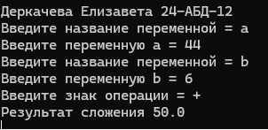
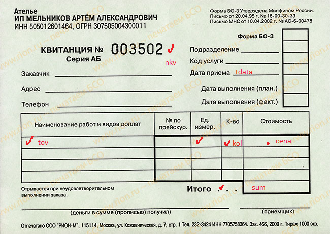

|
Задание 1. Используя
технологию создания классов в
Python
создать программу Калькулятир
Создать класс,
конструктор, поля и методы.

Сдать файлы *.exe *.py
Задание 2 Создать класс по обработке сведений о приеме товара на склад.
Создать класс,
конструктов, поля и методы.
В классе использовать следующие методы:
- Прием товара с сохранением в файле
- Формирование ведомости о поступлении товара (квитанция о
принятом товаре) Использовать поля: № квитанции, дата
приема, наименование товара, количество, цена за
единицу(вещественное число)

- В одну квитанцию включить не менее трех наименований
- Оформить прием товара по 3 квитанциям за день (
определить стоимость по каждой позиции и общую стоимость
принятого товара по квитанции)
- Оформить прием товара за три дня
- Сформировать отчет о приеме товара по одной квитанции
- Сформировать отчет о приеме за один день
- Сформировать отчет о приеме за три дня
|